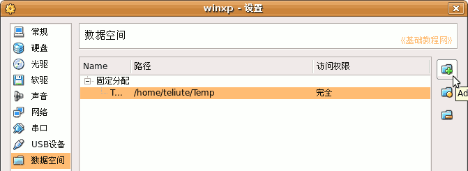
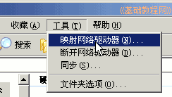
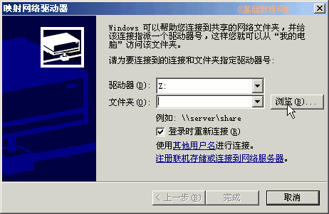
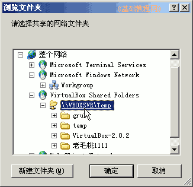
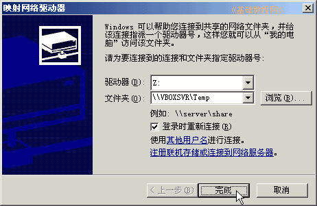
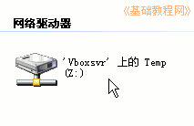

VirtualBox 虚拟机基础入门教程
作者：TeliuTe 来源：基础教程网
九、共享文件夹 返回目录 下一课有时候我们要在主机跟虚拟机之间交换文件，可以使用“数据空间”来进行共享，下面我们来看一个练习；
1、创建共享文件夹
1）运行主程序以后，点“设置”按钮，选左边的“数据空间”，在右边点加号按钮，添加一个主机里的文件夹即可；

2）添加好以后，启动虚拟机，进入WinXP系统；
2、映射为驱动器
1）打开“我的电脑”，在窗口菜单里点“工具－映射网络驱动器”命令；

2）然后出来一个映射面板，点中间的“浏览”按钮；

3）在出来的选择面板里，找到VirtualBox Shared Folders，点旁边的加号展开，选择共享的文件夹；

4）点确定按钮，回到映射面板，点“完成”按钮；

5）再打开“我的电脑”下面就多了一个网络驱动器，里面就是共享的文件夹；

本节学习了VirtualBox中共享文件夹的使用方法，如果你成功地完成了练习，请继续学习下一课内容；本教程由86团学校TeliuTe制作|著作权所有
基础教程网：http://teliute.org
美丽的校园……
转载和引用本站内容，请保留作者和本站链接。